税込価格／2026/11/16 時点

とろりと濃厚な鱈の白子を、ポン酢でさっぱりと。もみじおろしと一緒にどうぞ！お好きなお酒とお楽しみください。

鱈の白子を昆布にのせて、香ばしく焼き上げました。昆布の旨みが移った白子をだし醤油で！
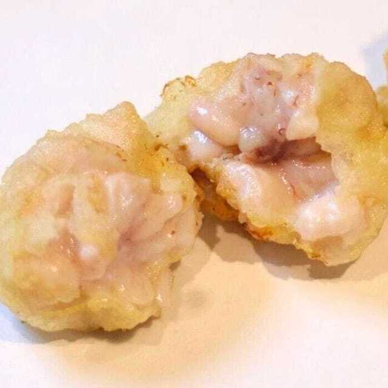

脂ののった鰤の皮目を香ばしく炙りました。わさびを添えてどうぞ！

鰤と大根を、味がしみるまでじっくり煮込みました。ほっとする味わいの一品！
ふぐならではの歯ごたえと上品な旨みをお造りで。


揚げだし豆腐に、湯葉ときのこのあんをたっぷりかけました。熱々のうちにどうぞ！


季節の旬菜を使った自家製ポテサラです！マヨネーズではなく、クリームチーズで和えています！

その日のおすすめの魚介を五種、彩りよく盛り合わせてお造りで。

その日のおすすめの魚介を三種、お造りで。
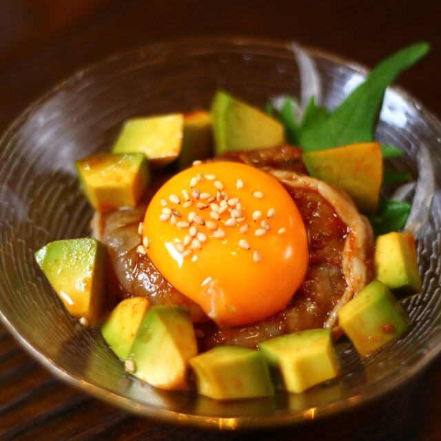
ぷりっとした生海老とアボカドをユッケ仕立てにしました。卵黄をくずして、よく混ぜてどうぞ！

脂ののった旬の秋刀魚を、皮目だけ香ばしく炙ったお造りです。 薬味と合わせてさっぱりとどうぞ！

秋に南下する戻り鰹は、脂ののりが格別です。 香ばしく炙ったたたきを薬味と合わせてさっぱりとどうぞ！
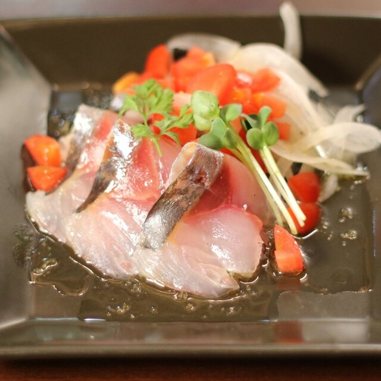
新鮮なアジにトマトと玉ねぎを合わせ、カルパッチョに仕立てました。箸休めにもアテにもどうぞ！
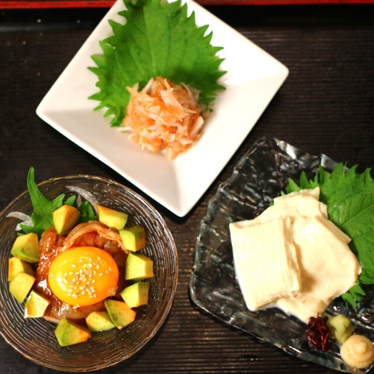
おすすめの前菜を三種、少しずつ盛り合わせました。最初の一皿にどうぞ！

出汁をたっぷり含ませて、ふんわりと巻き上げました。大根おろしと一緒にどうぞ！
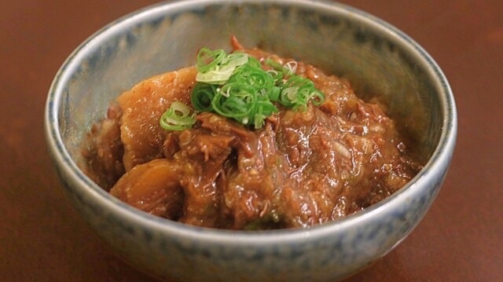
牛すじをとろとろになるまで、じっくり煮込みました。お酒がすすむ一品！

茄子にしらすと薬味をたっぷり盛りました。さっぱりと箸がすすむ一品！
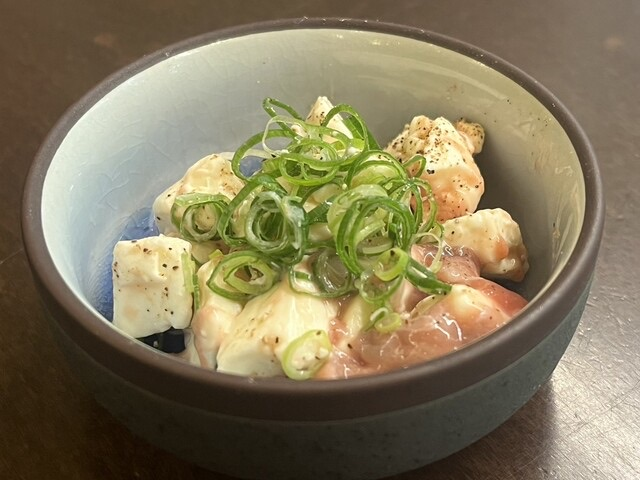
酒盗の濃い旨みを、クリームチーズがまろやかに。お好きなお酒とどうぞ！
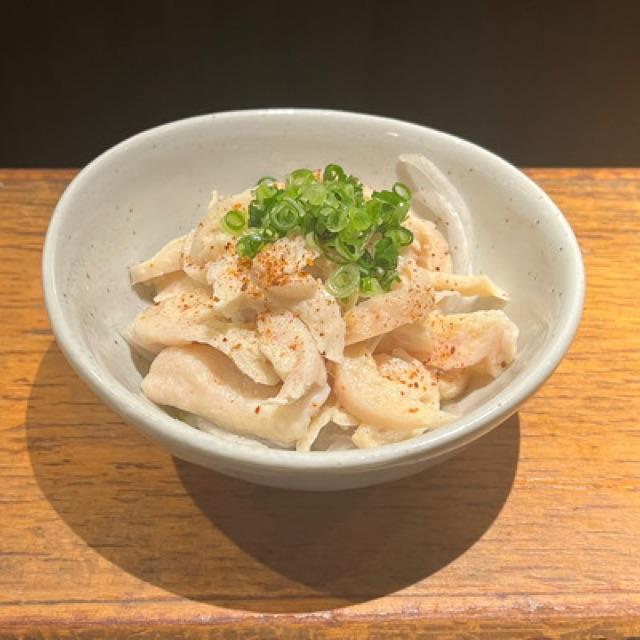
鶏皮をポン酢でさっぱりと仕上げました。お酒のお供にどうぞ！

揚げた小アジを甘酢に漬けた、さっぱりとした南蛮漬けです。

コリコリとした食感の鮫軟骨を、梅肉で和えた珍味です。お酒のお供にどうぞ！

とろりとなめらかな湯葉をお刺身で。大豆のやさしい甘みをお楽しみください！
焼いて甘みを引き出したいちじくを、味噌で田楽風に仕立てました。

三種の秋茸をバターで香ばしく焼き上げました。
バターのコクと、旬のきのこの香りが重なる一品。

エイヒレを香ばしく炙りました。噛むほどに旨みが広がります。マヨネーズをつけてどうぞ！

サザエを殻ごと焼き上げました。磯の香りをお楽しみください！

有頭海老を殻ごと香ばしく塩焼きにしました。旨みの詰まった頭までお楽しみください！ ※写真は2尾分です。

秋鮭と旬のきのこをホイルで包み、旨みを閉じ込めて蒸し焼きにしました。
さっぱりポン酢仕立て！
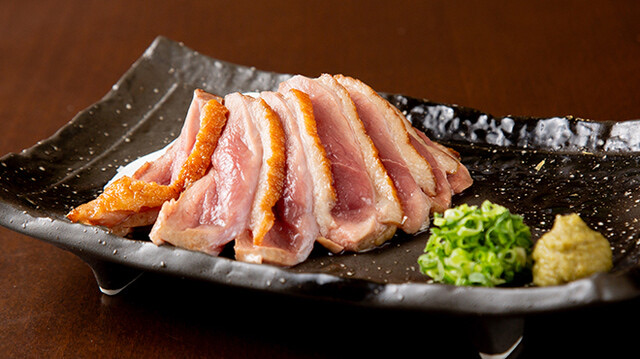
鴨肉の表面を香ばしく炙り、しっとりと仕上げました。薬味と一緒にどうぞ！
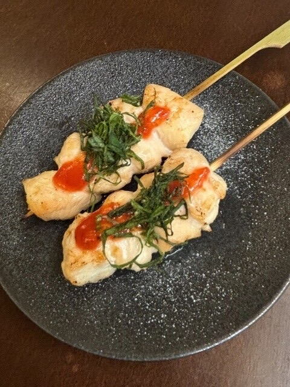
しっとり焼き上げたささみに、梅肉と大葉を合わせました。さっぱりとどうぞ！ 写真は2人前のものになります。

鶏肉とねぎを交互に刺した定番の焼鳥です。甘辛いタレで香ばしく焼き上げました！ 写真は2人前のものになります

皮付きのじゃがいもを、ほくほくに揚げました。みんなでつまめる一品！

明太子と大葉、クリームチーズを包んで、パリッと揚げました。とろけるチーズと明太子の旨みをどうぞ！

旬の完熟いちじくとクリームチーズをまるっと春巻きに！
パリッとした衣の中から、いちじくとチーズがとろけ出す至高の逸品。

こんがり香ばしく焼き上げたおにぎりです。お食事の〆にどうぞ！

Sparkling water

Oolong tea

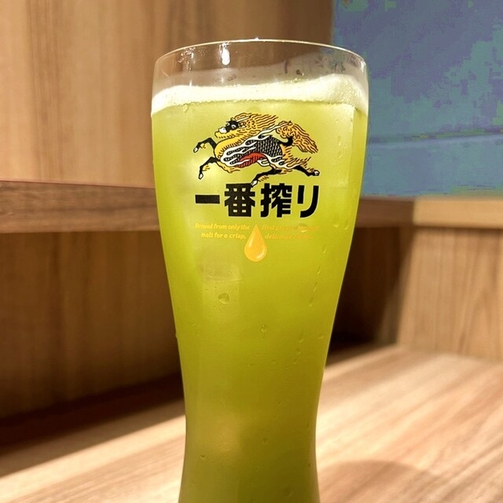


Draft beer


Whisky and Soda

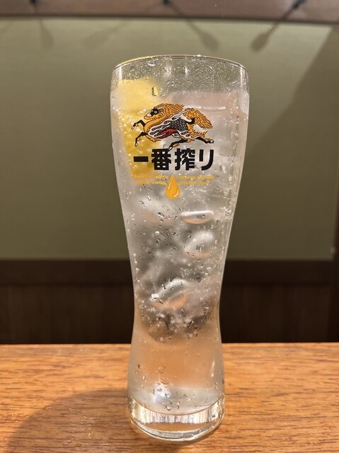
Lemon sour


Shochu Barley on the rock

Shochu Barley and water

Shochu Barley and hot water
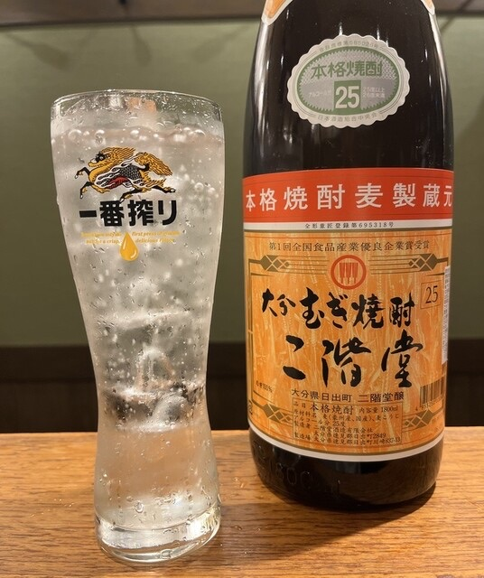
Shochu Barley and soda
Shochu with Oolong Tea
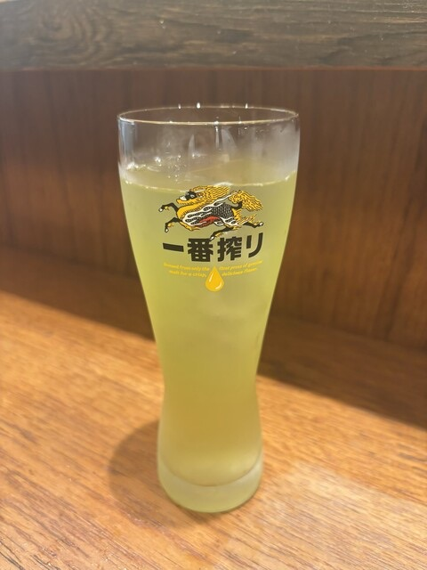


Shochu Sweet potato on the rock

Shochu Sweet potato and water

Shochu Sweet potato and hot water
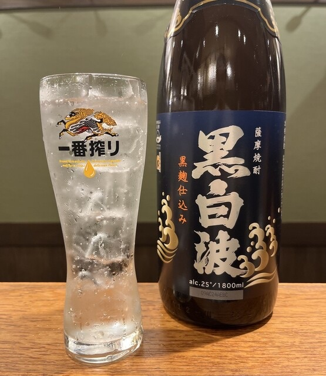
Shochu Sweet potato and soda


少し薄くはなりますが、水割りソーダ割りもできます。スタッフまで

少し薄くはなりますが、水割り ソーダ割り出来ます。スタッフまで